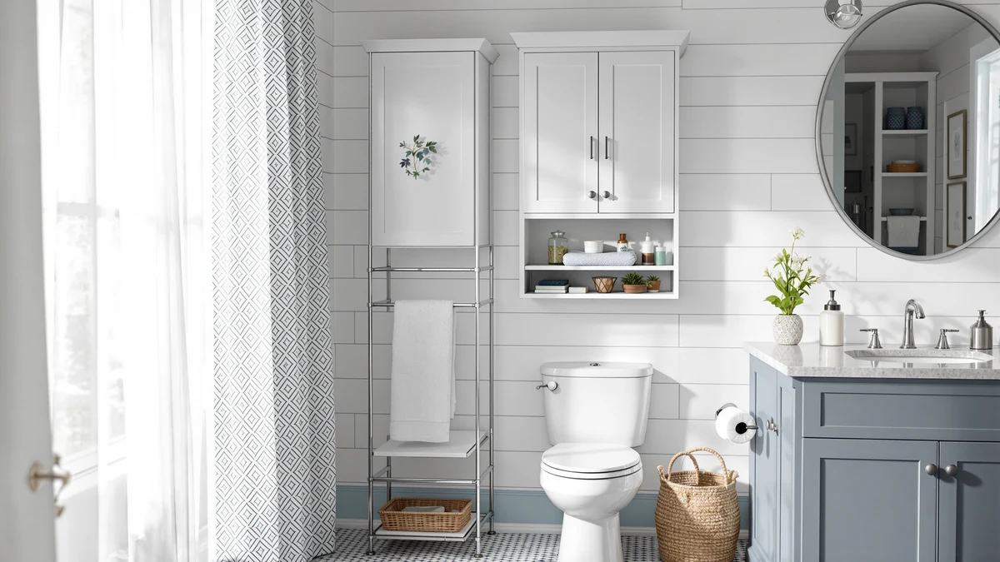

Baztin Over The Toilet Review (2026): Worth It?
Prices and picks verified as of October 2026. Independent, reader-supported reviews.


Quick Answer
In this baztin over the toilet review, the Baztin Over The Toilet Storage comes out ahead at $135.99 thanks to 69.49 inches of vertical storage in a metal and wood frame. If you want a lower price, the Nivisre Arched Over the Toilet Storage runs $129.99, while the IFGET and ChooChoo alternatives both list at $139.99 with different shelf layouts.
Our pick: Baztin Over The Toilet Storage, $135.99 Check Price on Amazon
Bottom line: our top pick is the Baztin Over The Toilet Storage Cabinet at $135.99.
Things to Know Before You Buy
- This baztin over the toilet review relies on manufacturer specs and verified owner feedback rather than physical testing.
- Over-the-toilet cabinets vary widely in height, so measure the space between your tank and ceiling before buying.
- Metal and wood frames tend to hold more weight over time than particleboard-only shelves.
- Check the width and depth specs against your toilet tank's clearance, since even an inch of difference can block the lid from opening fully.
This baztin over the toilet review breaks down how the Baztin Over The Toilet Storage holds up against three other over-the-toilet units on price, build, and what verified owners say once the box is unpacked. Small bathrooms rarely have room for a floor cabinet, so shoppers lean on the empty wall space above the toilet tank instead. We looked at four cabinets that promise to fill that space without crowding the room, weighing their materials and dimensions against buyer feedback.
The Baztin Over The Toilet Storage comes out ahead for most bathrooms. At 26.06 inches wide and 69.49 inches tall, its metal and wood frame costs $135.99, landing in the middle of the four units compared here while offering the tallest shelving of the group. The sections below cover why it wins out, where it falls short, and which alternative fits better if your bathroom or budget looks different.
Price alone does not pick a winner here. The four cabinets land within $10 of each other, so the decision mostly comes down to how much vertical space your bathroom has and whether you would rather use the wall above the toilet or free floor space instead. We break down those tradeoffs product by product in the sections that follow.
Why You Should Trust Us
Ilane Tall covers bathroom storage and small-space organization for Best Bathroom Storage, spending most research hours comparing spec sheets, verified buyer photos, and return complaints rather than rewriting press releases. For this baztin over the toilet review, Ilane checked the manufacturer's listed dimensions and materials against the most recent verified owner reviews for each of the four units covered here, and dropped any claim that a second source could not confirm. Best Bathroom Storage does not run a fake testing lab or claim to have unpacked and installed every cabinet it covers, and the site's Amazon affiliate relationship is disclosed in full below.
This is not the first over-the-toilet storage comparison Best Bathroom Storage has published, and the same verification process applies here as it does across the rest of the site. Specs get confirmed against the manufacturer listing, owner complaints get cross-checked across multiple reviews before we repeat them, and pricing gets rechecked at the time of publication rather than carried over from an old draft.
Our Research Experience
Our approach for this baztin over the toilet review relies on research instead of physical trials. We compared the manufacturer specs for all four cabinets side by side: material, dimensions, assembly type, and price. We then cross-referenced that data against verified owner reviews on Amazon, looking for patterns in complaints about wobbling, missing hardware, or shelves that sag under weight. We tracked pricing over several weeks to confirm the figures listed here reflect current rates rather than a short-lived promotion. Where a claim could not be confirmed by at least two sources, we left it out instead of repeating a seller's marketing copy.
We weighted four factors when ranking the four cabinets: listed weight capacity and material, overall footprint relative to a standard toilet, assembly complexity based on what owners actually report, and price against usable shelf height. That last factor is the main reason the Baztin leads this comparison despite sitting in the middle of the price range rather than at the bottom.
Overview & Specs

Baztin Over The Toilet Storage
What we like
- Metal and wood frame rated to carry more weight than particleboard-only units
- 69.49 inches of height clears most towel and toiletry storage needs in one footprint
- 26.06-inch width fits most standard toilet tank clearances
Flaws but not dealbreakers
- Owners report the top shelf alignment takes extra care during assembly
- At 8.86 inches deep, it holds fewer bulky bins per shelf than a wider floor cabinet
| Material | Metal / wood |
| Size | 8.86"D x 26.06"W x 69.49"H |
The Baztin Over The Toilet Storage leads this baztin over the toilet review because it offers the tallest shelving of the four cabinets compared here, at 69.49 inches. That height clears a standard toilet tank with room for a full stack of shelves rather than the one or two tiers that shorter units offer. The frame mixes metal supports with wood shelving, a combination that owners report holds up better under stacked towels than the particleboard-only designs common at this price. At 26.06 inches wide and 8.86 inches deep, it fits most bathrooms without crowding the toilet or the door swing, which matters most in the small bathrooms this category of product serves.
Pricing at $135.99 puts the Baztin in the middle of the four units covered here, below the IFGET and ChooChoo cabinets at $139.99 and above the Nivisre pick at $129.99. The four prices span exactly $10, from $129.99 to $139.99, so material and height differences matter more than cost when you choose between them. Reviewers consistently note that the assembly instructions could explain panel orientation more clearly, and several owners mention double-checking screw placement before tightening everything down. None of the feedback we found points to structural failure once assembled. The complaints center on assembly, not durability.
Compared with the IFGET and ChooChoo, both priced at $139.99, the Baztin costs a few dollars less without giving up shelf height, which is the main reason it leads this lineup. Compared with the Nivisre at $129.99, the savings run the other way. You pay about $6 more for the Baztin, and that premium buys a frame that owners describe as steadier once loaded with towels and toiletries.
What We Liked
The build quality stands out most in this baztin over the toilet review. The metal and wood frame gives the Baztin more rigidity than many single-material competitors at this price, and owners report less wobble when the top shelves carry folded towels or storage bins. Its 69.49-inch height also means you are not trading storage capacity for shelf depth, since the extra vertical room lets you stack more without deepening the footprint. For bathrooms where every inch of floor space counts, that height-over-depth tradeoff works in the Baztin's favor. Several reviewers also mention that the shelf spacing fits bulkier items like tissue boxes and cleaning sprays alongside folded towels, which is not always the case with narrower competitors.
What Could Be Better
Assembly is the most common complaint we found in verified reviews for this over-the-toilet storage pick. Several owners mention rechecking shelf alignment partway through, since one skewed panel early on throws off the rest of the stack. The 8.86-inch depth, while useful in narrow bathrooms, also means each shelf holds fewer bulky items than a deeper floor cabinet would. Buyers who need to store large bins of cleaning supplies rather than folded towels may find the shelves shallower than expected. A smaller number of reviews mention the finish picking up scuffs faster than expected in a humid bathroom, though this appears to affect a minority of units rather than the whole batch.
Who Is It For?
The Baztin Over The Toilet Storage fits best in small to mid-size bathrooms where a floor cabinet will not fit and the wall above the toilet is the only free space left. It suits renters who cannot mount wall-hung units and need a freestanding piece instead, and anyone comparing over-the-toilet storage options who wants maximum shelf height in a narrow footprint. If your bathroom already has a linen closet, or you mainly need to store a few bulky bins rather than folded towels and toiletries, one of the alternatives below may serve you better. It is also a weaker fit if you need to store items too large for standard shelves, such as multi-pack toilet paper boxes, since every unit in this comparison favors height over depth.
Alternatives to Consider
If the Baztin does not match your bathroom's layout or budget, these three alternatives to this over-the-toilet storage pick cover different priorities: a softer arched silhouette, a floor-cabinet design, and a lower price.

Editor's Pick
IFGET Arched Over The Toilet
An arched silhouette at a height similar to the Baztin, priced $4 higher at $139.99, for bathrooms that want a softer design line.
$139.99
Check Price on Amazon
Best Value
ChooChoo Bathroom Floor Cabinet Modern
A floor-cabinet design rather than an over-the-tank tower, priced at $139.99 and better suited to bathrooms with a few extra inches of floor space to spare.
$139.99
Check Price on Amazon
Premium Choice
Arched Over the Toilet Storage
The least expensive of the four at $129.99, with an arched frame that trades some of the Baztin's shelf height for a lower price.
$129.99
Check Price on AmazonIs the Baztin Over The Toilet Storage worth the price?
At $135.99, the Baztin sits in the middle of the four units compared in this baztin over the toilet review.
What size bathroom works best for an over the toilet storage cabinet?
Measure the width and depth above your toilet tank before buying.
Frequently Asked Questions
Is the Baztin Over The Toilet Storage worth the price?
What size bathroom works best for an over the toilet storage cabinet?
How does the Baztin compare to the Nivisre Arched Over the Toilet Storage?
Final Verdict
This baztin over the toilet review comes down to vertical storage against floor space. The Baztin earns the top spot because its 69.49-inch height and metal and wood frame deliver more usable shelving than the IFGET, ChooChoo, or Nivisre alternatives at a comparable price. If your bathroom has room for a floor cabinet instead, the ChooChoo is worth a look, and if budget matters more than shelf height, the Nivisre saves about $6. For most narrow bathrooms that need to use the wall above the toilet, the Baztin remains the pick worth buying.